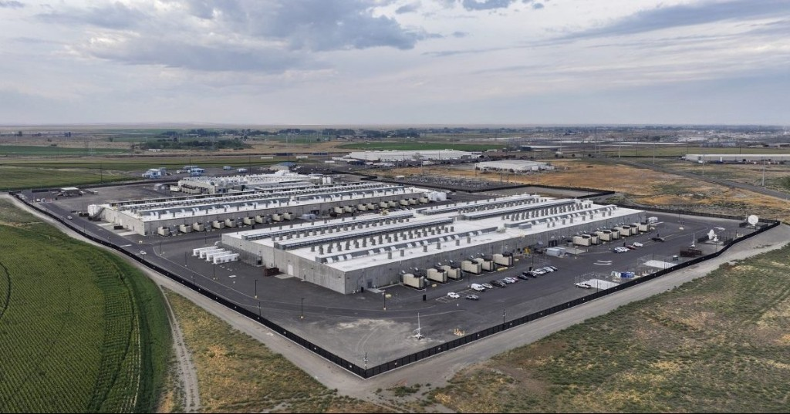

Water
Cooling at this scale needs enormous water and chemistry. “Closed-loop” can be revised after approval and this could contaminate our water supply.
Out-of-state developers are trying to bring a hyperscale data center to Gardner, and they're asking the City Council to approve heavy industrial zoning for it right next to homes, schools, and farms. The Council votes on the rezoning June 15.

Specifics on power, water, generators, construction, and the documents residents are still waiting for.
This isn't a warehouse, it's a long-term health risk for our community.
Cooling at this scale needs enormous water and chemistry. “Closed-loop” can be revised after approval and this could contaminate our water supply.
Data centers use massive diesel generators that require mandatory testing. The exhaust contains particulates and pollutants that are harmful to our health.
Cooling gear adds a low, constant hum 24/7/365. Chronic noise is a documented health stressor; kids take the hit early in sleep, focus, and daily stress.
Once land is zoned heavy industrial, the neighboring land is an easier “yes,” and the whole area can shift towards industrial.
Data centers give off enormous waste heat from cooling all that equipment compared to a typical building. That heat can be felt across roughly a six-mile radius around a site this scale.
Data centers pull massive amounts of power from the grid and have a reputation for not paying their fair share of upgrades, leaving nearby households to foot the bill when rates go up.
From a developer's office in another state, the area might look like vacant farmland on a parcel map. Up close, it's surrounded by homes, family farms, schools, and small businesses.
Simplified illustration of the residential context, not a survey. An annotated map of the actual parcel and surrounding properties will replace this once finalized.
Three things matter most before the vote: showing up at the meetings, contacting the people who vote, and signing the petition.
Add your name to the Change.org petition asking the Council to deny the rezoning.
Sign now → 2One tap on a phone opens an email pre-filled to the Mayor, Council, and Planning Commission.
Find contacts → 3Public meetings on May 13 and 15. Planning Commission hearing May 26. City Council vote June 15.
See the schedule →